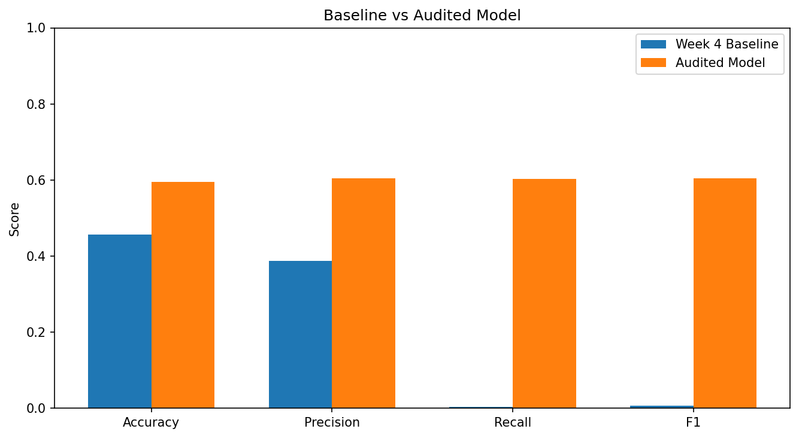
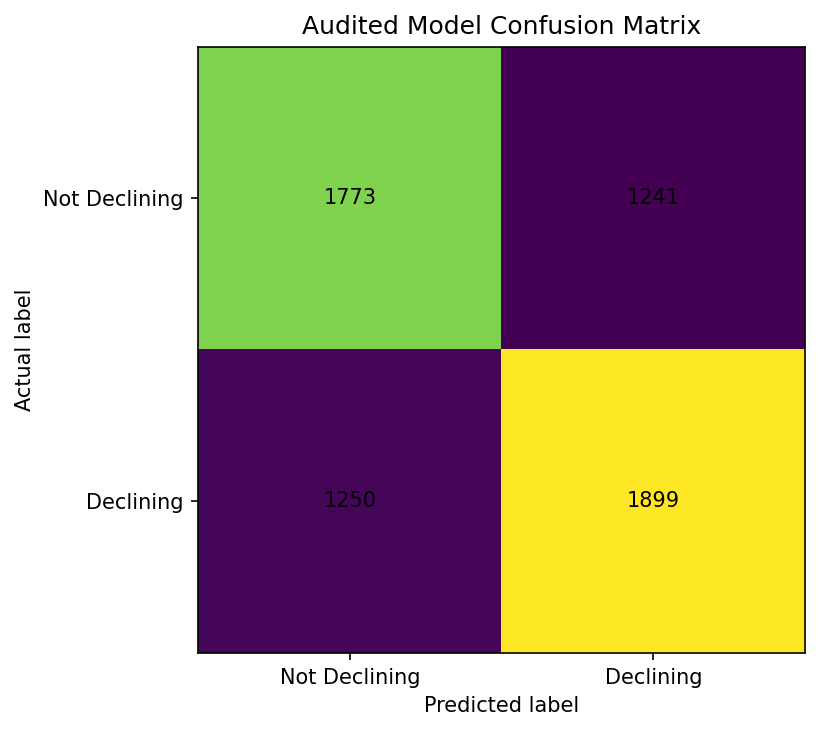

Content Refresh
Opportunity Scoring
A validation-first study of whether measured content, search, and engagement signals can help prioritize pages for human SEO review.
From model output to a review decision
Research question: Can measured content, search, and engagement signals identify pages associated with observed decline in search performance?
Decision supported: which pages should receive human SEO review first?
30,000 anonymized content records
Dataset
The project uses the FlyRank ML Internship starter dataset: 30,000 anonymized content records with 44 original columns.
The target is_declining_label is derived from trend_direction; records marked down receive label 1.
Public-safe scope
The deployed paper does not expose client names, private queries, or client-specific URLs.
The detailed data dictionary and FlyRank research reference are linked in the artifact section below.
An evaluation designed to be harder to fool
Model
Logistic Regression was selected for the binary classification task because its coefficients provide an interpretable directional view of the measured feature relationships.
Preprocessing
Numeric features were median-imputed and standardized before model fitting.
Validation
A client-grouped 80/20 split was used for the audited evaluation.
- Training: 23,837 rows / 25 clients
- Test: 6,163 rows / 7 clients
- Client overlap: 0
Leakage audit
Two features were removed because they are directly involved in constructing the decline label:
impressions_last_30d impressions_prev_30d
Some remaining features describe current-period performance, so the audited model should still not be presented as a pure future-forecasting model.
Honest split performance
Baseline vs audited model
| Metric | Baseline | Audited Logistic Regression |
|---|---|---|
| Accuracy | 0.4890 | 0.5958 |
| Precision | 0.0000 | 0.6048 |
| Recall | 0.0000 | 0.6030 |
| F1 Score | 0.0000 | 0.6039 |
The baseline made no positive predictions on this client-grouped test set, giving zero precision, recall, and F1. The audited model produced stronger measured classification performance under the same test split.


What this analysis cannot claim
- It does not establish causal reasons for content decline.
- It is based on an anonymized starter dataset and may not generalize to every SEO environment.
- Some features reflect current-period performance, limiting interpretation as a true future forecast.
- The client-grouped result is more conservative than the earlier random-split evaluation.
- Model scores should be reviewed alongside page context, search intent, content quality, business relevance, and recent performance.
Ranked actions for human review
Human review rule
The model should not automatically rewrite, delete, redirect, publish, or otherwise change content. Its role is to help teams decide where to look first.
Inspect the work behind the paper
Why this problem matters
FlyRank's Refresh product focuses on identifying underperforming content and organizing optimization work. This capstone explores a small, anonymized internship dataset through that same practical lens: identify measured signals, validate them conservatively, and turn the output into a human-reviewed action queue.
External product link: FlyRank Refresh ↗